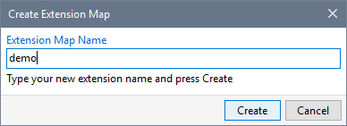
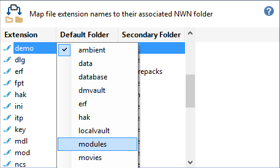
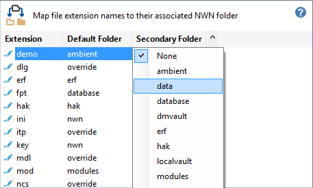
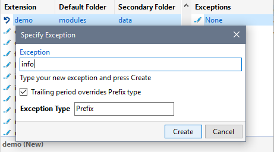
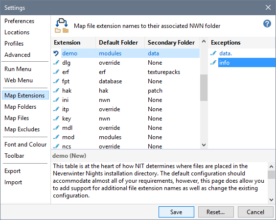

Use this procedure to define extension names that the Installer Tool supports.
- Press Insert or click New Extension to add a new extension name to the map.
- Type in the extension name and click Create.

- Click Default Folder from the menu and select the Installation or User Files folder that will be used for files with the extension you defined.

- If files with this extension can be placed in an alternative folder, click Secondary Folder from the menu and select the folder name.

- Click in the Exceptions panel and press Insert or click New Exception to specify a Secondary Folder usage condition. Type in the text that a file name must start or end with and click Create.

- Click Save when you have finished specifying the attributes for your new exception.

Related Topics
Define an extension map
Work with the Folders map
Work with the Files map
Work with the Excludes map